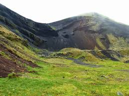
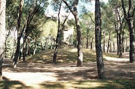
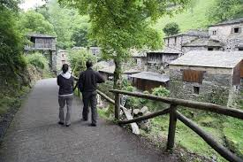
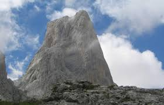
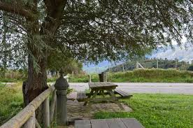

Estas excursiones nos proponen descubrir los paisajes de piedra en seco de la Serra de Tramuntana, hoy declarada Patrimonio Mundial de la UNESCO en la categoría de Paisaje Cultural. Asimismo, permite visitar interesantes vestigios históricos, encontrarse con mitos y leyendas, y conocer las tradiciones, la arquitectura, las costumbres, la gastronomía y la artesanía de este lugar privilegiado de la geografía isleña. El itinerario senderista se acerca a menudo a la costa y en algunos tramos a las cimas más elevadas de la sierra, siendo el punto más alto del recorrido el Coll de ses Cases de Neu, con poco más de mil doscientos metros de altura. Esta combinación y la diversidad de vegetación, con densos encinares y monte bajo típicamente mediterráneo, contribuyen a incrementar el interés paisajístico del sendero. La Ruta de Pedra en Sec GR 221 se sustenta principalmente en la red de antiguos caminos restaurados por el Consell de Mallorca, circunstancia que la hace accesible para senderistas de todas las edades. Además gracias a la climatología de la isla es practicable la mayor parte del año.
    | ETAPAS MAS INTERESANTES | TIEMPO DEL RECORRIDO Y LONGITUD | DESNIVEL |
| Tossals Verds - Son Amer | 5 h 35 min - 15.131 m | 869 m |
| Son Amer - Pont Romà | 4 h 45 min - 16.745 m | 677 m |
| Castell d´Alaró | 5 h 30 min - 18.015 m | 795 m |